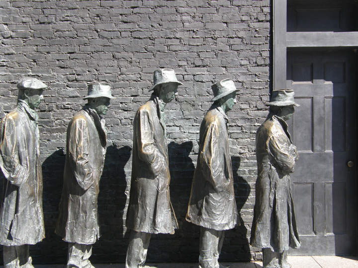

After reading this section, you should be able to answer the following questions:
We now describe the development and current condition of four of the federal government’s main domestic policies: welfare, social security, education, and health care.
The services and benefits governments provide through their social policies vary widely. Scandinavian countries, such as Norway, establish a safety net from the cradle to the grave. Americans rely more on employment and private sources (insurance policies) than the government for their income and to protect them against economic misfortune.
For some American policymakers, poverty stems in part from the failure of the economic system to provide enough jobs at a living wage and from racism and sexism. They support policies to alleviate poverty’s causes (e.g., increasing the minimum wage or lengthening the period of unemployment compensation). From this perspective, people are not much to blame for needing public assistance (welfare)Government aid to those in need..
An alternative view blames people for their fate. Public assistance violates the American values of individual enterprise and responsibility. It is believed that recipients would rather collect government handouts than work. No wonder welfare is one of the most reviled social programs. It is often given grudgingly and with stringent conditions attached.
Title IV of the Social Security Act of 1935 provided funds for the states to help the destitute elderly, the blind, and children. Its primary purpose was to assist poverty-stricken families with children during the heart of the Great Depression. Over time, it became Aid to Families with Dependent Children (AFDC), granting financial assistance to low-income mothers and their children.Michael B. Katz, In the Shadow of the Poorhouse: A Social History of Welfare in the United States (New York: Basic Books, 1997).
With expansion came criticisms, often conveyed and amplified by the media. The program was seen as supporting “unwed motherhood, idleness, and dishonesty.”Christopher Jencks, “What Happened to Welfare?” New York Review, December 15, 2005, 74. It was disparaged for providing aid to individuals without requiring anything in return. Families were given levels of assistance on the basis of their size: the more children families had, the more aid they received. Women were deterred from attempting to leave welfare by getting jobs because they were limited in the number of hours they could work without losing some of their benefits.
In his successful 1991 campaign for the presidency, Bill Clinton preempted what had been a Republican issue by promising to “put an end to welfare as we know it.” In 1996, after rejecting previous versions, he signed a Republican bill, the Personal Responsibility and Work Opportunity and Reconciliation Act (PRWORA). This helped him get reelected in 1996.
This law replaced AFDC with the Temporary Assistance to Needy Families (TANF) program. The federal government gives states grants in aid and greater autonomy in structuring their welfare systems if they follow rules. Adult welfare recipients are limited to a lifetime total of five years of TANF benefits. State governments lose some of their TANF funding unless they show that significant numbers of their welfare recipients are entering the workforce. To receive benefits, children under eighteen must live with their parents or in an adult-supervised setting.
Welfare Policies
Read PRWORA at http://thomas.loc.gov/cgi-bin/query/z?c104:H.R.3734.ENR: and TANF at http://www.acf.hhs.gov/programs/ofa/tanf/about.html
Since the law was passed, some states have reported decreases of over 50 percent in their number of welfare recipients. However it remains to be seen if the changes in welfare policy have led to less poverty or simply removed people from the welfare rolls“Welfare Reform: With TANF Flexibility, States Vary in How They Implement Work” (Washington, DC: General Accounting Office, 2002), accessed June 6, 2011, http://www.gao.gov/new.items/d02770.pdf. and what the effects of the policy are now that the economy has declined and people who had moved from welfare to employment have lost their jobs.
The federal government does pay the cost of food stamps. Nearly one in seven Americans receives them, with an average benefit of $500 a month for a family of four. Removing the stigma of welfare from the stamps, the government changed the program’s name to Supplemental Nutrition Assistance. Making it even more acceptable, it is supported by farmers and grocery stores.Jason DeParle and Robert Gebeloff, “The Safety Net: Across U.S., Food Stamp Use Soars and Stigma Fades,” New York Times, November 8, 2009, accessed June 6, 2011, http://www.nytimes.com/2009/11/29/us/29foodstamps; and Jason DeParle and Robert Gebeloff, “Once Stigmatized, Food Stamps Find New Users and Acceptance,” New York Times, February 11, 2010, A1.
Some policies are controversial at the start, then build up powerful support from their current and future beneficiaries, becoming widely accepted, even treasured, by the public. Over time, they grow in complexity and cost. Social SecuritySocial insurance program for the elderly. is a notable example.
Among Americans most distressed by the Great Depression were the nation’s elderly, many of whom lost their savings and were unable to support themselves. President Franklin D. Roosevelt and Congress attempted to address this problem through the Social Security Act of 1935.
Figure 16.1
These figures, part of the memorial to President Franklin D. Roosevelt, symbolize the desperate conditions of the elderly during the Great Depression and President Roosevelt’s Social Security policy in response.
Source: Photo courtesy of Jim Bowen, http://commons.wikimedia.org/wiki/File:New_Deal_Memorial.jpg.
It established a system of social insuranceGovernment invests individuals’ mandatory payroll deductions in a trust fund to be distributed according to specific criteria (e.g., age). in which taxes on payrolls were used to provide benefits to the elderly. Social Security was soon expanded to cover benefits for “survivors,” including widows, dependent children, and orphans. In 1956, disabled Americans were added to the list of beneficiaries, thus formally creating the Old Age, Survivors and Disability Insurance (OASDI) system.For an overview of the origin of the Social Security System, see Edward D. Berkowitz, Robert Ball and the Politics of Social Security (Madison: University of Wisconsin Press, 2003). In 1972, benefit levels were tied to the consumer price index—benefit levels go up when the consumer price index does.
Social Security now provides benefits to over forty-eight million Americans. It is the main source of economic survival for two-thirds of the elderly and the only source of income for over 30 percent of the aged.
Traditionally, more money has been paid into the Social Security Trust Fund than drawn out, leading to a revenue surplus. But Americans are living longer than ever. Longer lives mean larger payouts from the fund, as there is no limit on the number of years people receive benefits. Also, recent generations entering the workforce are generally smaller in size than their predecessors. By 2040, there will not be enough money in the fund to finance recipients at the current level.For a contrary view, see Joseph White, False Alarm: Why the Greatest Threat to Social Security and Medicare Is the Campaign to “Save” Them (Baltimore: Johns Hopkins University Press, 2001).
Special commissions have issued reports, prominently covered with alarmist stories by the press, about these problems. Proposals to “fix” Social Security have been developed by these commissions, think tanks, other interest groups, and a few politicians. Policymakers are wary of suggesting that they may tamper with the revered system; they make change with delicacy. Thus in 1983, the age of eligibility for full retirement benefits was increased from 65 to 66, but the change wasn’t effective until 2009; the age increases to 67 in 2027.
Additional revenue could be generated by increasing the percentage of the payroll tax or the amount to which it is applied on employees’ wages and employers’ contributions. However, tax increases are never popular among elected officials, so these options lack advocates in Congress.
Thinking to trade on the momentum of his 2004 reelection, President George W. Bush went public with a campaign to inspire public and congressional support for his proposals to “save” Social Security.For details of President Bush’s campaign, see George C. Edwards III, Governing by Campaigning: The Politics of the Bush Presidency (New York: Longman, 2007), 216–80. Launching his campaign in his State of the Union address, he embarked on a high-profile “60 Cities in 60 Days” tour. His theme: Social Security was in perilous condition. He proposed to save it through personal (private) savings accounts. People would be allowed to invest a third of their Social Security withholdings into a variety of investment options such as the stock market.
The argument for privatization is that the stock market greatly outperforms Social Security’s trust fund over the long term.The Cato Institute, a conservative think tank, has been a major proponent of privatization. Its recommendations can be found at Cato Institute, “Social Security,” http://www.socialsecurity.org. Over time, therefore, privatized investment would be a boon to the overall size of the trust fund and protect the solvency of the system.
The president appeared at town hall meetings with handpicked, sympathetic audiences. Signs saying “Protecting our Seniors” flanked him. He used the positive and evocative words “choice” and “ownership” to describe his proposals.
President Bush was supported by such powerful interest groups as the US Chamber of Commerce and the Business Roundtable. He also received support from potential beneficiaries of his proposed changes: Wall Street firms would receive billions of dollars to manage personal accounts.
The president faced opposition from Democrats and powerful interest groups such as organized labor and AARP (formerly the American Association of Retired Persons). They were bolstered by experts in Social Security policy who provided information challenging and undermining Bush’s arguments and claims.
Critics of the president’s proposals argued that there was no crisis; that the stock market goes down as well as up, so investing in it is risky and people could end up with reduced retirement income; and that private investment accounts would require the government to borrow about $2 trillion to offset the reduction in payroll taxes to avoid a shortfall in payments owed to current retirees. Most dramatically, the president’s opponents contended that his proposals would destroy the program.
It was a perfect setup for the news media. On one side were the president and his nationwide campaign; on the other side was the opposition. Experts could be called on to assess the validity of both sides’ arguments. This was all done on a policy issue—the future of Social Security—of public interest and concern.
From the start, media coverage undermined the president. The very first story in the New York Times set the pattern. It was headlined “As White House Begins Campaign for Overhauling Social Security, Critics Claim Exaggeration.”Edmund L. Andrews, “As White House Begins Campaign for Overhauling Social Security, Critics Claim Exaggeration,” New York Times, January 10, 2005, A15. It cited “outside analysts,” including the nonpartisan Congressional Budget Office and academics casting doubt on the president’s arguments. It contained this devastating paragraph: “White House officials privately concede that the centrepiece of Mr. Bush’s approach to Social Security—letting people invest some of their payroll taxes in private accounts—would do nothing in itself to eliminate the long-term gap.”
Perhaps because there was no new news in the president’s appearances and statements, stories reporting them focused on the rigged audiences, the “carefully screened panelists,” and “meticulously staged “conversations.”Jim VandeHei and Peter Baker, “Social Security: On with the Show: President’s ‘Conversations’ on Issue Are Carefully Orchestrated, Rehearsed,” Washington Post, March 12, 2005, A3.
The more the president spoke, the less the public supported his proposals. From early January into May 2005, public opinion about the way Bush was handling Social Security decreased from 41 to 31 percent approval, and disapproval increased from 52 to 64 percent.Gallup/CNN/USA Today poll, January and May 2005.
The president ended his campaign. Personal retirement accounts disappeared from Congress’s policy agenda.
Traditionally, education policy has been the domain of state and local governments. Schools are funded mainly by local property taxes. Consequently, schools’ resources and thus their quality of education depend on their location, with vast differences between and often within school districts.
Figure 16.2
Because much of their funding comes from property taxes, the quality of schools differs drastically, even in the same city and district.
The federal government’s limited involvement began to change in the 1960s as part of President Lyndon Johnson’s War on Poverty. The 1965 Elementary and Secondary Education Act (ESEA) allotted funds for developing remedial programs, hiring teachers and aides, and purchasing supplies and equipment. The Head Start Program, also established in 1965, provided low-income children with preschool education. The Department of Education was created in 1979.
Fulfilling his campaign pledge, repeated in his inaugural address, to close the gap in achievement between poor and minority children and children attending primarily white schools in the suburbs and to improve school performance, President George W. Bush obtained passage of significant amendments to the ESEA in the No Child Left Behind ActPresident George W. Bush’s policy, enacted into law, to improve education. of 2002. He signed the legislation into law in an elaborate ceremony accompanied by his bipartisan congressional allies.
The No Child Left Behind Act of 2002
Read the complete No Child Left Behind Act at http://www2.ed.gov/policy/elsec/leg/esea02/index.html.
The law was a major policy accomplishment by the president. Placing its administration in the Education Department, he overcame the opposition of some his party’s leaders who wanted to abolish the department. Imposing federal requirements on schools, he radically changed federal-state relations in education.An account of education policy and politics is Patrick J. McGuinn, No Child Left Behind and the Transformation of Federal Education Policy (Lawrence: University Press of Kansas, 2006); a critique of the law and suggestions of ways to improve it is Scott Franklin Abernathy, No Child Left Behind and the Public Schools (Ann Arbor: University of Michigan Press, 2007); and a slashing attack on education policy, including NCLB, as more spectacle than rational is Mary Lee Smith with Linda Miller-Kahn, Walter Heinecke, Patricia F Jarvis, and Audrey Noble, Political Spectacle and the Fate of American Schools (New York: Routledge/Falmer, 2004).
The law called for states to implement accountability systems covering all public schools and students and to test all students in grades 3–8 in reading and math. Schools failing to make adequate yearly progress toward goals are subject to corrective actions and restructuring. To increase parental choice for children attending an underperforming school, schools are required to let low-income parents use allotted federal funding to pay for tuition at a school in the district that has attained acceptable standards.
No Child Left Behind
President Bush touted No Child Left Behind as a great domestic accomplishment of his administration. He promoted it from the White House, on radio, and in speeches.For example, see the radio addresses of January 4, 2003, September 6, 2003, and January 3, 2004; the Rose Garden speech of June 10, 2003; and the speech on May 12, 2004. Education Secretary Rod Paige talked it up throughout the country. The Department of Education created a website and issued publications and press releases describing the act and how its objectives were being achieved.
The New York Times persistently contradicted the administration’s beguiling rhetoric. Reporters detailed problems in how the program was administered and implemented. The newspaper’s education writer critically evaluated the policy, and the editorial page’s verdict on the program was caustic.
The newspaper pointed out that states have widely different standards for measuring students’ progress—there is no agreement on how much students need to know to be considered proficient. Many states have low proficiency standards. Students ace these state tests only to fail more rigorous federal exams.Sam Dillon, “Students Ace State Tests, but Earn D’s From U.S.,” New York Times, November 26, 2005, A1, 10. States with high standards could be penalized by having many failing schools, while states with low standards and poor performance would be left alone.Ford Fessenden, “How to Measure Student Proficiency? States Disagree on Tests,” New York Times, December 31, 2003, A16; and for a typical piece by education writer Michael Winerip, see “On Education; A Pervasive Dismay on a Bush School Law,” New York Times, March 19, 2003, A24.
According to the newspaper, schools reported implausibly high graduation rates and low dropout rates even as they were pushing out low achievers in order to keep up test scores. School districts were not enforcing and failed to meet a provision in the law requiring a “highly qualified” teacher in every classroom by 2006.Sam Dillon, “Most States Fail Demands Set Out in Education Law,” New York Times July 25, 2006, A14. Only 12 percent of the two million students in public schools eligible for free tutoring were receiving it. Above all, the Bush administration’s funding of the program was billions of dollars short of the amount authorized by Congress.
The Times printed an op-ed about the Department of Education’s rankings of reporters on a one hundred–point scale “depending on whether their stories were critical or favorable toward the law.”Andrew J. Rotherham, “No Pundit Left Behind,” New York Times, January 12, 2005, A23. And repeated revelations (first reported in USA Today) came up that media commentators had been paid to promote the policy, including one pundit who received $240,000 and often appeared on television and radio without mentioning the payment.
The Times’ coverage focused on the program’s inadequacies and failures, its duplicity and deception. Exposure is a news value, common in journalism; the Times’ reporters were doing their job. Missing, though, was an adequate acknowledgment and appreciation of the program’s accomplishments and the difficulty of achieving its goals.
President Obama’s Secretary of Education Arne Duncan promised to rectify the defects of NCLB. He embraced competition, accountability, parental choice, and incentives. Specifically, he proposed to raise academic standards, end the misleading identification of thousands of schools as failing, turn around schools that were truly failing, recruit and retain effective teachers, track students’ and teachers’ performance, and tie teacher evaluation to students’ test scores. He wanted to increase the number of charter schools—a broad term describing the more than five thousand private schools set up mainly in urban areas, with local and state and private funds, to compete with public schools.Carlo Rotella, “Class Warrior,” New Yorker, February 1, 2010, 24–29.
Duncan encouraged the development of national standards in English and math to be adopted by the states, specifying the skills students should have at each grade level. Although the timetable for implementing the standards is uncertain, states will have to rethink teacher training, textbooks, and testing.
Duncan also created the Race to the Top competition allocating $4.3 billion in education aid to states that comply with the administration’s educational goals. But this is a modest sum, won by only a few states, compared with the approximately $650 billion spent on K–12 education annually.
At the same time, states and localities beset by budget deficits are slashing their expenditures for education. They are doing this by dismissing teachers, hiring few new ones, increasing class sizes, and cutting programs.
So even though the federal government is now far more involved in education than ever before, it prods but cannot compel the states and localities to do its bidding. Moreover, some states and school districts still object to federal intrusion and mandates. Besides, the quality of education often depends more on a student’s family and community than the schools, starting with whether children are healthy enough to learn.
Program by program, the federal government has contributed to the costs of medical care for some of the people who have difficulty paying their medical bills or have no health insurance. The media encouraged the creation of such government policies by consistently reporting about the large number of uninsured Americans who, it was assumed, were without adequate doctor, prescription drug, and hospital care.
In 1965, the most extensive health coverage legislation in American history became law. MedicareFederal program of medical benefits to those over sixty-five. helps citizens sixty-five and older meet their primary medical care needs. It covers around forty million people.
Medicare has two parts. Part A pays some of the hospital charges for individuals who are eligible for Social Security benefits. It is funded by payroll deductions and matching contributions from a patient’s employer. People are responsible for both a deductible charge that must be paid before Medicare payments are authorized and copayments for many hospital-related services. There are no limits on the total costs people can incur.
Part B is an optional insurance system covering health-care costs outside of hospital stays for physician services, medical tests, and outpatient visits. Participants pay a monthly fee, deductible charges, and copayments. The government contributes about three-fourths of the overall costs.
Medicare’s lack of a prescription drug benefit was particularly hard on the elderly and disabled, who commonly take several prescription drugs. Responding to this need, the Medicare Prescription Drug and Modernization Act of 2003 contains two types of assistance programs. The first is a prescription drug discount card program saving Social Security recipients roughly 15 percent to 25 percent annually.
In the program’s more substantial part, individuals pay an annual premium and deductible in return for the federal government paying 75 percent of their prescription drug costs up to $2,250.
Because of exploding health costs and the new prescription drug benefit, Medicare may be in worse financial shape than Social Security. According to the program’s trustees, its hospital insurance trust funds will run out of money in 2019.Robert Pear, “Medicare Costs Expected to Soar in Coming Years,” New York Times, March 24, 2004, A1, 15.
MedicaidProgram that finances medical and long-term care for low-income and disabled adults and children. was created in 1965. It provides health-care coverage for approximately fifty million poor and disabled Americans. More than a third of them are over sixty-five. The federal government pays about half the costs of their medical care, including hospital stays, physician fees, and various diagnostic services. States pay the remainder of the costs of the coverage.
The federal government requires coverage of the blind, the disabled, and children (Children’s Health Insurance Program, https://www.cms.gov/home/chip.asp) under the age of eighteen whose family’s income is below the poverty level. Otherwise, states decide eligibility for inclusion in Medicaid. State standards vary significantly; someone eligible in California might be excluded in Texas. Nonetheless, Medicaid pays approximately two-thirds of the costs of nursing home care in this country.
Because of the high cost of health-care services covered under Medicaid, state governments have become increasingly burdened financially. Other than education, Medicaid takes up the single greatest percentage of state budgets, a cost that is increasing annually. This situation has caused states to cut back on a number of the program’s optional medical services.
Around fifty-one million Americans lacked health insurance. This figure included approximately nine million under the age of eighteen who were eligible for but not enrolled in Medicaid or the Children’s Health Insurance Program. Some twenty-eight million people came from households with income above the poverty line but whose employers did not provide them with health insurance. Their work was often temporary or part time and low-paid. About fifteen million of the uninsured had income below the poverty line yet were not receiving Medicaid.
Politicians proposed policies in response to the lack of health care. Most notably, the Clinton administration, led by First Lady Hillary Clinton, proposed health-care coverage for all United States citizens. This 1994 initiative died for lack of support in Congress, in part because of its complexity and a negative advertising campaign by interest groups against it.Jacob S. Hacker, The Road to Nowhere: The Genesis of President Clinton’s Plan for Health Security (Princeton, NJ: Princeton University Press, 1997).
After he assumed office in 2009, President Obama took up health care as a major policy initiative. His administration negotiated (i.e., bargained) with every major sector of the health-care industry to support its health-care proposals. Motivating the industry was the drop in the number of employers insuring their employees or providing generous coverage and the number of employees who could afford to pay their share of the cost of insurance. This resulted in fewer Americans with insurance coverage and thus able to pay for hospital care, doctors, and drugs.
At the heart of the bargain “was a simple quid quo pro: accept greater public regulation and involvement in return for greater guaranteed financing.”Jacob S. Hacker, “The Road to Somewhere: Why Health Reform Happened,” Perspectives on Politics 8, no. 3 (September 2010): 865. That is, the government would require people to have insurance, thereby greatly expanding the market. This bargain did not prevent each industry group from lobbying to modify or scuttle provisions in the legislation that might reduce its members’ income. The drug industry opposed studying the effectiveness of treatment; the American Medical Association lobbied to kill the proposal for a government-run insurer (i.e., the public option); hospital lobbyists objected to a Medicare oversight board that could reduce payments.David D. Kirkpatrick, “Groups Back Health Overhaul, but Seek Cover,” New York Times, September 12, 2009, A1.
In March 2010, the Democratic majority in Congress passed the Patient Protection and Affordable Care Act, arguably the most important domestic legislation in decades. It passed without a single Republican vote and despite millions of dollars of advertising aimed at the forty Democrats in the House deemed vulnerable to defeat if they voted for the bill. In this instance, party loyalty, appeals from party leaders (especially the president), advertisements from supporters of the legislation, and the realization that this was the most propitious opportunity to enact health reform in many years overcame the opponents’ arguments and advertising.
The law is complicated; many provisions do not go into effect until 2014 or later. Bureaucrats will have to write the thousands of pages of rules, define terms such as “benefits,” and clarify the details. States will have to implement many provisions. Lobbying will be intense. The Republican majority in the House of Representative voted in 2011 to repeal the law and is likely to strip away funds for putting the law into effect. The law’s constitutionality has been challenged in court—cases that, probably consolidated, will likely reach the US Supreme Court.
If it remains in effect, the law will eventually provide health insurance for around thirty-two million uninsured Americans. It will expand eligibility and subsidize lower premiums for Medicaid, transforming it from a government health-insurance program just for poor families into a much wider program to include millions of the poorest Americans, including able-bodied adults under sixty-five who earn no more than 133 percent of the federal poverty level. People not covered by their employers and who earn too much to qualify for Medicaid can buy coverage from state-based insurance purchasing organizations. The law prohibits insurance companies from rejecting people for preexisting medical conditions, removes annual and lifetime limits on payments by insurance companies, and enables children to stay on their parents’ policy until they turn twenty-six.
Such a complicated law raises a host of criticisms and questions. Are its costs affordable? Can Medicaid absorb the additional people, especially when—even now—many doctors do not accept Medicaid patients on the grounds that the reimbursement it pays is too low? Will insurance premiums continue to rise substantially? Is it constitutional to fine people who remain uninsured? Can the law curb unnecessary care (whatever “unnecessary” means in practice)?
In this section, we discussed the development and current condition of four of the main domestic policies: welfare, social security, education, and health care. We explained why and how the federal government, particularly the presidency, became involved, the policies it pursued, which ones were enacted into law, and their effects.